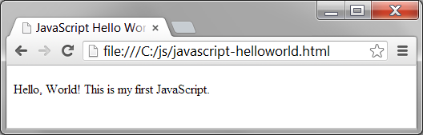

이 저작물은 크리에이티브 커먼즈 저작자표시-비영리 3.0 Unported 라이선스에 따라 이용할 수 있습니다.
본 수업에서는 첫 자바스크립트 프로그램인 헬로 월드(Hello World) 자바스크립트를 작성하는 방법을 살펴본다.
첫 자바스크립트 프로그램을 작성할 준비가 되면 텍스트 편집기가 필요하다. 처음 시작할 때는 메모장 같은 익숙한 편집기를 사용해도 된다.
자바스크립트 프로그램을 작성하는 데 유용한 기능을 제공하고 문법 강조와 자동 완성 등을 지원하는 텍스트 편집기을 원할 수도 있다. 다음과 같은 무료 IDE/편집기를 살펴보고 사용해 볼 수 있다.
자바스크립트 프로그램을 만들려면 먼저 HTML 페이지를 만든 다음 HTML 페이지 안의 script 태그에 자바스크립트 코드를 집어넣는다.
아래의 헬로 월드 예제에서는 브라우저에게 실행 가능한 자바스크립트 콘텐츠가 태그 안에 들어 있다고 알려주는 자바스크립트 문장을 script 태그에 집어넣었는데, 그러고 나면 브라우저가 자바스크립트 모드로 전환해서 그 안에 들어 있는 스크립트를 실행할 것이다.
javascript-helloworld.html
<!DOCTYPE html>
<html>
<head>
<title>JavaScript Hello World</title>
</head>
<body>
<script type="text/javascript">
document.write("Hello, World! This is my first JavaScript.");
</script>
</body>
</html>
자바스크립트를 테스트하려면 브라우저를 이용해 위의 HTML 페이지를 열어야 한다. 그러고 나면 브라우저가 HTML 페이지를 불러들여 그 안에 포함된 자바스크립트를 실행할 것이다.
많이 쓰는 브라우저로는 파이어폭스, 크롬, 인터넷 익스플로러가 있다. 자바스크립트를 테스트하려면 그러한 브라우저를 설치해야 하며, 사파리, 오페라, 이전 버전의 인터넷 익스플로러와 같은 다른 주요 브라우저를 설치해야 할 수도 있다.
크롬 브라우저를 이용해 헬로 월드 자바스크립트가 포함된 HTML 페이지를 연 결과는 다음과 같다.

| ← 이전 | 홈 | 다음 → |